The feel
Cassette futurism builds the future out of retro technology: clunky, industrial-looking kit that is a bit on the used side.1 The keyboards are chunky, the CRT monitors flicker and the tape players run reel to reel.2 Space travel is a job, not an adventure. The crew of the Nostromo are not in awe of travelling between the stars; they just want to get paid and get home.2
It works because it is believable. Ron Cobb, who designed the Nostromo,3 said each environment should be rendered "as convincingly as possible, but always in the background".2 For Creative Assembly's Alistair Hope it is "a disillusioned view of the future",4 mundane and grounded in reality, which supports the horror.5 Crude machines offer no miraculous technological way out, so players have to rely on their wits.2
- beige
- humming
- tactile
- utilitarian
- lived-in
- slow to boot
Where it comes from
The hardware was real: the Commodore PET, first shown in January 1977, had its monitor and cassette tape drive built in.6 Star Wars and Alien, two films of the late 1970s, put used, old and grimy spaceships on screen,1 and on the bridge of Alien's Nostromo, designed by Ron Cobb,3 forty television screens showed computer readouts and navigation data.7 Kraftwerk's Computer World (1981) put a computer terminal on its yellow sleeve.8 Games took the look up decades later: Alien: Isolation (2014) allowed no technology that could not have existed on the 1979 film set,4 and Starfield's art director traces the tactile look of its "NASA-punk" to pre-CGI film of the 1970s and 1980s.9,1
Core elements
Late-1970s and 1980s technology
The technology belongs to the late 1970s and 1980s. Alien: Isolation allowed nothing that could not have existed on the film's set in 1979,4 and ROUTINE's lunar base follows the 1980s vision of the future, with analogue technology everywhere.10
Physical analogue controls
Every control is physical. "This isn't a world of holograms and touchscreens," said Alien: Isolation's creative lead, and the game fills it with big CRT monitors and thick analogue buttons instead.11 Starfield's art director describes the same very tactile look, taken from films made before CGI.9
Low-resolution CRT readouts
Screens are low-resolution 4:3 CRTs,3 often green on black.1 Alien's designers chose everyday tubes over flat screens to match the Nostromo's beaten-up kit,3 and apart from the MU/TH/UR terminal every screen on the ship is a readout or a gauge.5
Worn industrial interiors
This is a workplace. Production designer Michael Seymour wanted the Nostromo to look "well used, lived in and slightly battered after years of service".7 Pipes, valves, grilles and cables are left exposed, and control rooms overflow with analogue instruments and redundant panels.12
Corporate signage and pictograms
Signs and labels are corporate issue. Ron Cobb named his wall pictograms the Semiotic Standard For All Commercial Trans-Stellar Utility Lifter And Heavy Element Transport Spacecraft, and the company logo turns up on clothing, containers, mugs and even cat dishes.3
Machines based on real products
Machines look like real products. The Commodore PET put a CRT, a keyboard and a cassette tape deck in one case,13 and No Code researched most of Stories Untold's computers and tape recorders from real 1980s hardware.14
How to do it
Deconstruct the reference
Creative Assembly's first stage was deconstructing Alien, tearing the Nostromo apart to find what makes it feel like the Nostromo, with Fox's archive of blueprints, concept art and thousands of set photos to work from.5 Then hold every new asset to the same cut-off: no technology that could not have existed on the 1979 set.4
Base machines on real hardware
Research real hardware, then change the badge. Stories Untold's 'Futuro' computer is a made-up model based on a ZX Spectrum, and players were sure they had owned one.14 Alien's art directors dressed the sets with thousands of pounds of scrap, particularly from old jet aircraft engines, because it looked authentic.7
Render live screens in the scene
Render a second camera into a render texture and use that texture as the base map of the screen's material, the way you would build a CCTV monitor.15 Make most screens readouts and gauges, as on the Nostromo, and only a few of them take input.5
Record screen textures to VHS
For the screen texture, record the interface to VHS and play it back on a tube TV. Jon McKellan did this for Alien: Isolation, magnetising the screen and cables while he filmed, and got more varied effects than any software test had.5 The footage then went back into the game, from the inventory menu to the scan-line-laden loading screens.4
Light with practical fixtures
On Alien's low-ceilinged sets, Derek Vanlint lit through grilles and with lamps in shot, using 747 aircraft lights, panic lights, neon and fluorescent units.16 Plan three levels of light: the sleeping ship, the working ship, and the emergency, when the light seems to come from explosions and panic lights.16
Match the light to the machines
In the room where the crew talk to MU/TH/UR, thousands of small bulbs burned at about 2000 K, so Vanlint kept his diffused key light yellow to look as if they lit the room.16 He projected film onto the actors' faces to fake the glow of a monitor, and when the ship was blowing up he left the screens out of sync, because the rolling bar added to the panic.16
Record sound from old electronics
Creative Assembly made new sound effects on a 1970s ARP Pro/DGX analogue synth and layered in recordings of the electromagnetic noise from old TV screens and other electronics.4 ROUTINE's diegetic audio takes its cue from the lo-fi, tangible sounds of 1980s technology.10
Cheat sheet
- Cut-off
- No technology newer than the 1979 film set4
- Screens
- Curved, low-resolution 4:3 CRTs3
- Text grid
- 40 columns by 25 lines, 8 x 8 character matrix, 9-inch tube13
- Controls
- Thick analogue buttons, no holograms or touchscreens11
- Room light
- Practicals, fluorescents and small bulbs near 2000 K16
- Type
- Helvetica labels, Pump Demi nameplates, stretched City Light on MU/TH/UR3
- Sound
- 1970s analogue synth, recorded electromagnetic noise of old TVs4
Do
- Hold every asset to your cut-off year, and cut anything newer.4
- Base each machine on real hardware, then give it a made-up brand.14
- Put the company logo on everything, down to the mugs.3
- Leave traces of people: reminder notes on tables, posters on walls.9
- Let crude technology raise the stakes, so no gadget can solve the threat for the player.2
Avoid
- Showy holograms and touchscreens.11 Andy Kelly argues that Prometheus, with its holographic interfaces, is less convincing than Alien for this reason.2
- Overcooked CRT and VHS effects. Jon McKellan, who spent four years on them for Alien: Isolation, says they are very easy to overdo and should be a layer of authenticity, not the point of the game.14
- A shiny, optimistic future. Alien: Isolation's artists chose a lo-fi, gritty one instead.5
- A jumble of eras. McKellan stopped watching the other Alien films while he worked, so his assets would not mix Alien with the very different look of Aliens.5
- Detail with no job. In ROUTINE, the corridors and facilities are full of details that feel like they have some purpose or function.10
Tools and tutorials
- Typeset in the Future: Alien
A close reading of the film's type, icons and screens.
- Tube TVs, VCRs and magnets give Alien: Isolation its look
How the game's team made its screens from real hardware.
- HUDS+GUIS: Alien: Isolation
A breakdown of the game's lo-fi interface design.
- cool-retro-term
A free terminal that imitates old CRTs, handy for screen reference.
- Unity: Render a camera's output to a Render Texture
Feed a camera into a screen's material, as for a CCTV monitor.15
Palette
Sampled from Ron Cobb's bridge paintings and Semiotic Standard, Alien: Isolation, Objects in Space, Stories Untold and the Kraftwerk sleeve. Press a key to copy its value.
Feel the vibe
In motion
Listen
Cold, sparse and patient. It sets the pace of a ship on autopilot.
YouTubeThe title track of the 1981 album whose yellow sleeve shows a computer terminal with the band on its screen.8
YouTubeFrom the game's score. Play it after Goldsmith's main title and compare the two.
YouTubeSoft synth and a worn, taped texture, for quiet terminal rooms.
YouTubeBright, bubbling synth lines. A warmer contrast to Goldsmith, for the ship's working hours.
YouTube
More references
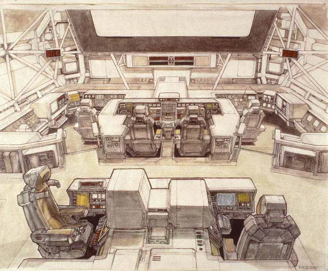
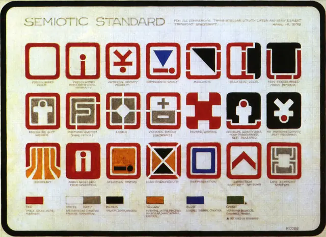
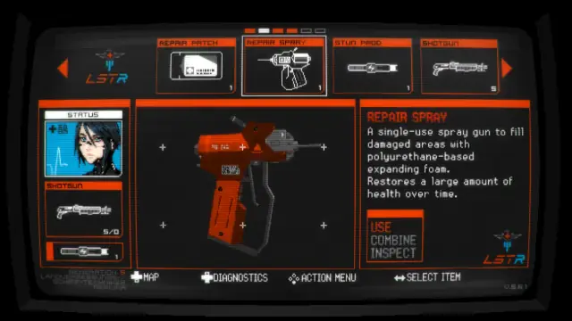
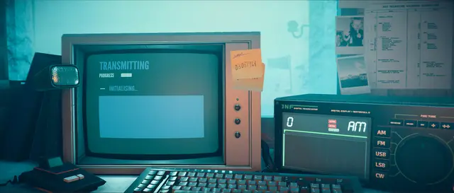
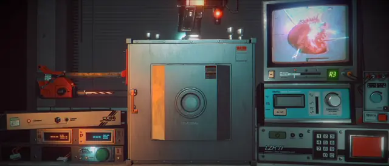
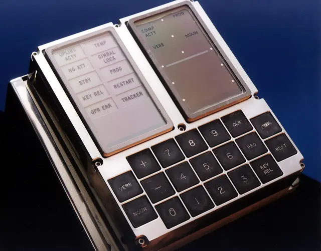
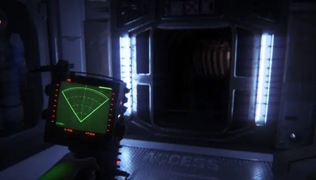
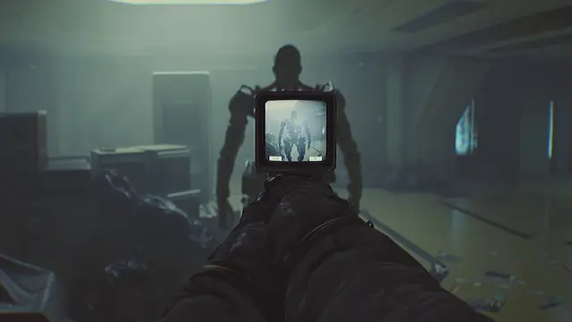
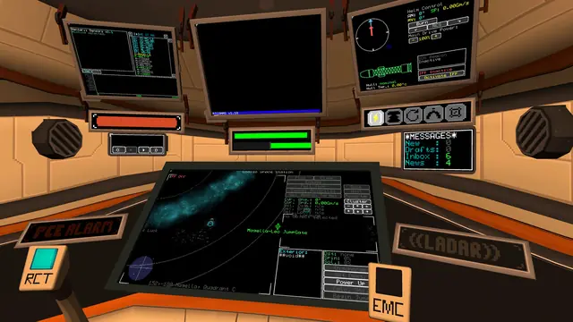
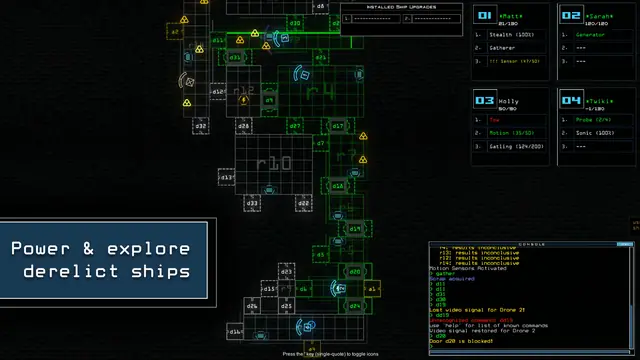
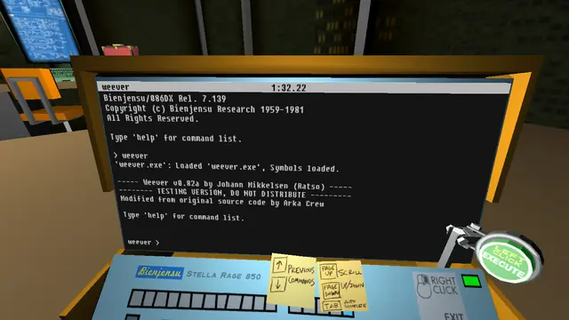
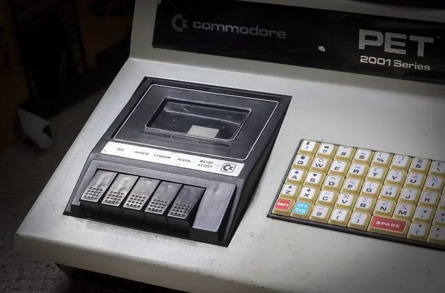
Games
- Alien: Isolation
Built only from technology that could have existed on the 1979 film set.4 Study the desks, the terminals and the menus.
- SIGNALIS
A cold, authoritarian take with its whole interface built as a CRT terminal.
- Duskers
You type commands to drones at a console. The interface is the game.
- Stories Untold
Each episode is built around a desk of old hardware, researched from real 1980s kit.14 A lesson in props and light.
- ROUTINE
A moon base designed around the 1980s idea of the future.10 Study the handheld CRT tool you explore it with.
- Objects in Space
A starship flown entirely through panels and small terminals.
- Quadrilateral Cowboy
Heists run by typing into a portable deck you set down in the world.
- Iron Lung
How far one cramped room, a few switches and a bad camera can go.
Film, art and more
- Alien
Start with the Nostromo's sets and the MU/TH/UR terminal. Its used, grimy look went on to shape generations of space games.1
- Dark Star
John Carpenter and Dan O'Bannon's $60,000 comedy about a bored crew and a talking bomb. It was a dry run for Alien, and Ron Cobb worked on its effects.17
- Ron Cobb
He designed the Nostromo and its Semiotic Standard pictograms.3 His own site shows the drawings.
- Computer World
Kraftwerk's 1981 album. Its yellow sleeve shows a computer terminal with the band on its screen.8
- 2001: A Space Odyssey
The earlier, cleaner future of pristine interiors12 and flat screens.3 Compare them with the Nostromo's worn panels.
- Commodore PET
A built-in monitor, a keyboard like a supermarket till and a cassette drive in one case.6
- Apollo Guidance Computer
Its DSKY had a numeric keypad, a row of status lights and lit number readouts, and astronauts keyed in commands as verb-noun codes.18
Sources
- 1Cassette futurism | Alternatives to the sci-fi space aesthetic that almost every game uses
- 2Why I love the low-fi tech of Alien: Isolation
- 3Alien
- 4Tube TVs, VCRs and magnets give 'Alien: Isolation' its signature look
- 5The making of horror masterpiece Alien: Isolation: 'It was a giddy, exhausting, intense time'
- 6Commodore introduces the PET 2001
- 7Behind the Scenes of Alien
- 8Rewind: Kraftwerk - Computer World
- 9Building the Boundless Galaxy of ‘Starfield’
- 10Distinctive New Sci-Fi Horror Game Routine Launches Later This Year on Xbox
- 11Alien: Isolation has one claw firmly stuck in 1979
- 12Spaceships, ruins, and corporate cities: the menacing architecture of Alien
- 13Oldest Commodore PET 2001 Brochure
- 14Crafting the unique, genre-defying horror of Stories Untold
- 15Render a camera's output to a Render Texture in URP
- 16'Alien' and Its Photographic Challenges
- 17Looking back at John Carpenter’s Dark Star
- 18Keyboard, Display (DSKY), Apollo, Block I